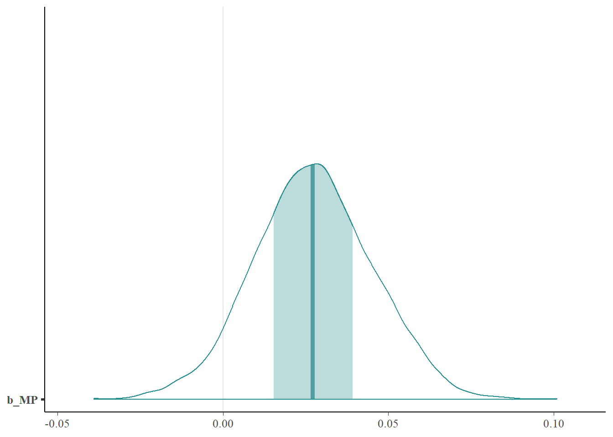
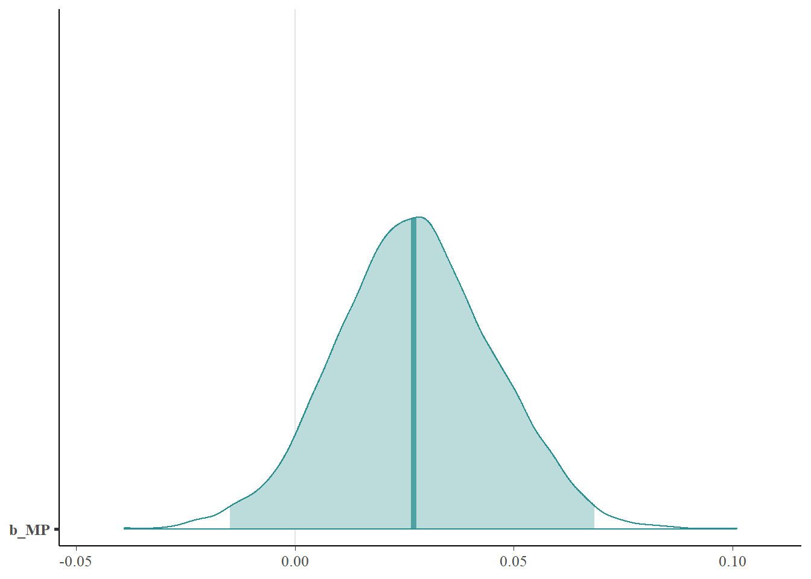
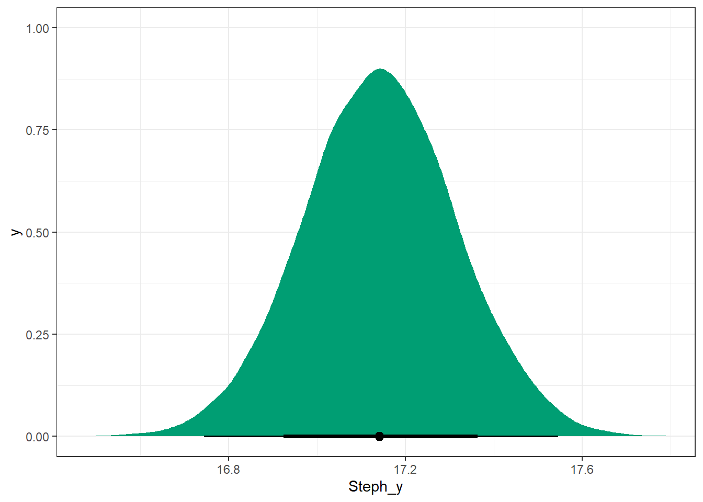

Our research question investigates how usage rate (USG) and minutes played per game (MP) affect an NBA player’s annual salary for the 2022-23 season. Usage rate is the percentage of a team’s possessions a player ends while on the court. It’s calculated by adding up a player’s field goal attempts, turnovers, and trips to the free throw line, and then dividing that by the team’s total of those plays when the player is on the court. Minutes played per game describes how many in-game minutes (there are 48 in-game minutes in a regular NBA game) a player averages per game.
This data set contains numerous variables for players in the NBA. We are using USG and MP (as well as their interaction) as explanatory variables and log(Salary) as the response variable.
The data set includes numerous variables for NBA players during the 2022-23 season. We decided to focus on the usage rate and minutes played per game statistics and how that affects a player’s salary. The data is publicly available because players’ salaries are reported by agents and reporters and in-game stats are often released by NBA stat keepers. Kaggle (where we got the data from) compiled the data set from numerous websites and databases.
Pre-Bayesian Analysis
As seen below these explanatory variables are not very normal. However, we went into our analysis by transforming the response variable of salaries since salaries are much more likely to be skewed to the right without previous insepction of the dataset, since a few select players will have extreme salaries.
Possible transformations and inspection of data before analysis.
Proposed Bayesian Model
\[{\log(Y)} = {\beta_0} + {\beta_1}(USG) + {\beta_2}(MP) + {\beta_3}(USG*MP) + {\varepsilon}\]
Choice of Likelihood
We used a Normal likelihood to calculate the probability of observing a certain log(Salary) given certain parameters for the betas.
Assumptions
Linearity: The relationship between log(Salary) and the explanatory variables is linear Homoscedasticity: variance of the residuals is constant Independence of errors: Residuals are independent of each other Normally distributed: Residuals are approximately normally distributed Independence of independent variables: included interaction effect in model to see how variables interact with each other.
Bayesian Model Analysis
Call:
lm(formula = log(Salary) ~ MP + USG. + MP * USG., data = nba_salary)
Residuals:
Min 1Q Median 3Q Max
-7.8611 -0.5311 0.2033 0.7138 2.7588
Coefficients:
Estimate Std. Error t value Pr(>|t|)
(Intercept) 14.1414029 0.3791128 37.301 < 2e-16 ***
MP 0.0272010 0.0179315 1.517 0.1300
USG. -0.0485190 0.0197029 -2.463 0.0142 *
MP:USG. 0.0033111 0.0008146 4.065 5.65e-05 ***
---
Signif. codes: 0 '***' 0.001 '**' 0.01 '*' 0.05 '.' 0.1 ' ' 1
Residual standard error: 1.191 on 463 degrees of freedom
Multiple R-squared: 0.4103, Adjusted R-squared: 0.4064
F-statistic: 107.4 on 3 and 463 DF, p-value: < 2.2e-16We used BRMS to choose a prior distribution for the data. The model chose a student_t(3, 15.1, 2.5) distribution for the intercept and a student_t(3, 0, 2.5) distribution for sigma. The MP and USG variables have a flat prior, which is an improper distribution, but one that makes no assumption of the distribution.
BRMS Chosen Prior
prior class coef group resp dpar nlpar lb ub
(flat) b
(flat) b MP
(flat) b MP:USG.
(flat) b USG.
student_t(3, 15.1, 2.5) Intercept
student_t(3, 0, 2.5) sigma 0
source
default
(vectorized)
(vectorized)
(vectorized)
default
defaultBRMS (First Model)
Compiling Stan program...Start samplingBRMS Posterior Output Analysis
The posterior distribution does not change very much if the prior changes. This is because we have a large sample size for our data, which means that the data is going to hold the most weight in the posterior distribution.

Family: gaussian
Links: mu = identity; sigma = identity
Formula: log(Salary) ~ MP + USG. + MP * USG.
Data: nba_salary (Number of observations: 467)
Draws: 4 chains, each with iter = 3500; warmup = 1000; thin = 1;
total post-warmup draws = 10000
Regression Coefficients:
Estimate Est.Error l-95% CI u-95% CI Rhat Bulk_ESS Tail_ESS
Intercept 14.14 0.38 13.38 14.88 1.00 4292 4899
MP 0.03 0.02 -0.01 0.06 1.00 4641 5394
USG. -0.05 0.02 -0.09 -0.01 1.00 4516 5659
MP:USG. 0.00 0.00 0.00 0.00 1.00 4291 5334
Further Distributional Parameters:
Estimate Est.Error l-95% CI u-95% CI Rhat Bulk_ESS Tail_ESS
sigma 1.19 0.04 1.12 1.27 1.00 6202 6083
Draws were sampled using sampling(NUTS). For each parameter, Bulk_ESS
and Tail_ESS are effective sample size measures, and Rhat is the potential
scale reduction factor on split chains (at convergence, Rhat = 1).Note, that we did run an interaction between minutes played and player usage. We decided to keep that in when simulated because before simulation we found that the interaction was significant, but now it was not in the posterior. We did not find this out until after the simulation was ran, but we kept because it’s notable that minutes played and usage, while correlated, it’s interaction was not significant to the log salary.

Simulated distributions follow a similar distribution with the actual curve. The actual curve has some strange curves due to the salary.

From this plot we can see that minutes played has a positive correlation with the usage rate. This is expected as generally players with a high minutes played will have a larger usage rate.
Looking good so far! The chains are very close to each other here.
b_Intercept b_MP b_USG. sigma
0.4291956 0.4640683 0.4516122 0.6083066 Looks good.

MP is a positive coefficent, just like before the simulation.


Possibly may have some negative simulated values, but more positive.
Surprisingly the coefficient for Usage is negative. Not very strong as usage has a range from 0 to 100, and most players have below 50 so not as big of an effect.


| .chain | .iteration | .draw | b_Intercept | sigma |
|---|---|---|---|---|
| 1 | 1 | 1 | 13.40485 | 1.204247 |
| 1 | 2 | 2 | 13.34406 | 1.219551 |
| 1 | 3 | 3 | 15.02886 | 1.152280 |
| 1 | 4 | 4 | 14.75198 | 1.173161 |
| 1 | 5 | 5 | 13.99844 | 1.188551 |
| 1 | 6 | 6 | 14.09294 | 1.199925 |
| 1 | 7 | 7 | 14.02182 | 1.157511 |
| 1 | 8 | 8 | 13.98063 | 1.149257 |
| 1 | 9 | 9 | 14.03309 | 1.133600 |
| 1 | 10 | 10 | 13.97693 | 1.207306 |
| .chain | .iteration | .draw | Intercept_y |
|---|---|---|---|
| 1 | 1 | 1 | 13.40485 |
| 1 | 2 | 2 | 13.34406 |
| 1 | 3 | 3 | 15.02886 |
| 1 | 4 | 4 | 14.75198 |
| 1 | 5 | 5 | 13.99844 |
| 1 | 6 | 6 | 14.09294 |
| 1 | 7 | 7 | 14.02182 |
| 1 | 8 | 8 | 13.98063 |
| 1 | 9 | 9 | 14.03309 |
| 1 | 10 | 10 | 13.97693 |
| .chain | .iteration | .draw | sigma_y |
|---|---|---|---|
| 1 | 1 | 1 | 1.204247 |
| 1 | 2 | 2 | 1.219551 |
| 1 | 3 | 3 | 1.152280 |
| 1 | 4 | 4 | 1.173161 |
| 1 | 5 | 5 | 1.188551 |
| 1 | 6 | 6 | 1.199925 |
| 1 | 7 | 7 | 1.157511 |
| 1 | 8 | 8 | 1.149257 |
| 1 | 9 | 9 | 1.133600 |
| 1 | 10 | 10 | 1.207306 |
Posterior Population Analysis
1% 10% 25% 50% 75% 90% 99%
13.27517 13.64588 13.88557 14.13771 14.39287 14.62084 15.02537 There is a 50% chance that the population mean salary is between \(e^{13.87}\) and \(e^{14.38}\) dollars. There is an 80% chance that the population mean salary is between \(e^{13.63}\) and \(e^{14.64}\) dollars. There is a 98% chance that the population mean salary is between \(e^{13.23}\) and \(e^{15.04}\) dollars.
\(e^{13.23}\) is roughly around 556,821.5 dollars and \(e^{15.04}\) is roughly around 3,402,429 dollars
1% 10% 25% 50% 75% 90% 99%
1.110284 1.145708 1.167242 1.193142 1.219245 1.243345 1.286354 There is a 50% chance that the population SD of salary is between \(e^{1.17}\) and \(e^{1.22}\) dollars. There is an 80% chance that the population SD of salary is between \(e^{1.14}\) and \(e^{1.25}\) dollars. There is an 98% chance that the population SD of salary is between \(e^{1.11}\) and \(e^{1.29}\) dollars.
\(e^{1.11}\) is roughly around 3.03 dollars and \(e^{1.29}\) is roughly around 3.63 dollars. This is a little strange, but since we transformed our response, the standard deviation likely wasn’t as varied transformed.
Stephen Curry Posterior Analysis (Model 1)
| .chain | .iteration | .draw | b_Intercept | b_MP | b_USG. | b_MP:USG. | sigma | Steph_y |
|---|---|---|---|---|---|---|---|---|
| 1 | 1 | 1 | 13.40485 | 0.0548780 | -0.0062152 | 0.0017695 | 1.204247 | 17.01991 |
| 1 | 2 | 2 | 13.34406 | 0.0545617 | 0.0015346 | 0.0015706 | 1.219551 | 16.97440 |
| 1 | 3 | 3 | 15.02886 | -0.0244940 | -0.0892599 | 0.0056076 | 1.152280 | 17.44392 |
| 1 | 4 | 4 | 14.75198 | 0.0045300 | -0.0867470 | 0.0047307 | 1.173161 | 17.30883 |
| 1 | 5 | 5 | 13.99844 | 0.0155831 | -0.0408150 | 0.0035912 | 1.188551 | 17.13699 |
| 1 | 6 | 6 | 14.09294 | 0.0178233 | -0.0452517 | 0.0035047 | 1.199925 | 17.07861 |
| 1 | 7 | 7 | 14.02182 | 0.0404170 | -0.0481537 | 0.0028471 | 1.157511 | 16.99415 |
| 1 | 8 | 8 | 13.98063 | 0.0323411 | -0.0431461 | 0.0030347 | 1.149257 | 17.02974 |
| 1 | 9 | 9 | 14.03309 | 0.0182546 | -0.0363864 | 0.0034585 | 1.133600 | 17.25890 |
| 1 | 10 | 10 | 13.97693 | 0.0369747 | -0.0420919 | 0.0029937 | 1.207306 | 17.17546 |

1% 10% 25% 50% 75% 90% 99%
16.74413 16.92391 17.02689 17.14147 17.25778 17.36358 17.54615 There is a 50% chance that the salary of a player with Stephen Curry’s USG and MP is between \(e^{17.031}\) and \(e^{17.258}\) dollars. There is an 80% chance that the salary of a player with Stephen Curry’s USG and MP is between \(e^{16.926}\) and \(e^{17.361}\) dollars. There is a 98% chance that the salary of a player with Stephen Curry’s USG and MP is between \(e^{16.747}\) and \(e^{17.533}\) dollars.
In other words for the 98% credible interval, there is a 98% chance that the salary of a player with Stephen Curry’s USG and MP is between 18,755,545 and 41,160,927 dollars. This is a really accurate prediction, especially since Stephen Curry’s salaries is the highest in the data set.
Davion Mitchell Posterior Analysis (Model 1)
We then inspected a player in the middle of the list, Davion Mitchell who plays a decent amount of games and is a reasonably average NBA player to analyze.
| .chain | .iteration | .draw | b_Intercept | b_MP | b_USG. | b_MP:USG. | sigma | Davion_y |
|---|---|---|---|---|---|---|---|---|
| 1 | 1 | 1 | 13.40485 | 0.0548780 | -0.0062152 | 0.0017695 | 1.204247 | 14.75941 |
| 1 | 2 | 2 | 13.34406 | 0.0545617 | 0.0015346 | 0.0015706 | 1.219551 | 14.84746 |
| 1 | 3 | 3 | 15.02886 | -0.0244940 | -0.0892599 | 0.0056076 | 1.152280 | 14.36750 |
| 1 | 4 | 4 | 14.75198 | 0.0045300 | -0.0867470 | 0.0047307 | 1.173161 | 14.19449 |
| 1 | 5 | 5 | 13.99844 | 0.0155831 | -0.0408150 | 0.0035912 | 1.188551 | 14.52262 |
| 1 | 6 | 6 | 14.09294 | 0.0178233 | -0.0452517 | 0.0035047 | 1.199925 | 14.47335 |
| 1 | 7 | 7 | 14.02182 | 0.0404170 | -0.0481537 | 0.0028471 | 1.157511 | 14.34340 |
| 1 | 8 | 8 | 13.98063 | 0.0323411 | -0.0431461 | 0.0030347 | 1.149257 | 14.42557 |
| 1 | 9 | 9 | 14.03309 | 0.0182546 | -0.0363864 | 0.0034585 | 1.133600 | 14.67423 |
| 1 | 10 | 10 | 13.97693 | 0.0369747 | -0.0420919 | 0.0029937 | 1.207306 | 14.50199 |

1% 10% 25% 50% 75% 90% 99%
14.04659 14.23934 14.34862 14.47095 14.58620 14.69532 14.86884 There is a 50% chance that the salary of a player with Davion Mitchell’s USG and MP is between \(e^{14.354}\) and \(e^{14.590}\) dollars. There is an 80% chance that the salary of a player with Davion Mitchell’s USG and MP is between \(e^{14.250}\) and \(e^{14.698}\) dollars. There is a 98% chance that the salary of a player with Davion Mitchell’s USG and MP is between \(e^{14.070}\) and \(e^{14.866}\) dollars.
For the 98% credible interval, there is a 98% chance that the salary of a player with Davion Mitchell’s USG and MP is between 1,289,803 and 2,859,050 dollars. This is a pretty accurate prediction to his actual salary.
BRMS (Model 2)
We did another analysis below for both Stephen Curry and Davion Mitchell. We saw that Davion Mitchell had a lot more games played than Stephen Curry but had significantly lower pay. We wanted to see if games played had more of an effect on players like Davion, but would not players with higher stats like Curry.
Will only look at the 98% credible interval for this analysis.
Call:
lm(formula = log(Salary) ~ MP + USG. + GP + MP * USG., data = nba_salary)
Residuals:
Min 1Q Median 3Q Max
-5.8219 -0.6882 0.0414 0.6706 3.6089
Coefficients:
Estimate Std. Error t value Pr(>|t|)
(Intercept) 13.7403724 0.3433410 40.020 < 2e-16 ***
MP -0.0377184 0.0172884 -2.182 0.0296 *
USG. -0.0441375 0.0177373 -2.488 0.0132 *
GP 0.0278838 0.0026632 10.470 < 2e-16 ***
MP:USG. 0.0039952 0.0007361 5.428 9.24e-08 ***
---
Signif. codes: 0 '***' 0.001 '**' 0.01 '*' 0.05 '.' 0.1 ' ' 1
Residual standard error: 1.072 on 462 degrees of freedom
Multiple R-squared: 0.5233, Adjusted R-squared: 0.5192
F-statistic: 126.8 on 4 and 462 DF, p-value: < 2.2e-16Compiling Stan program...Start sampling Family: gaussian
Links: mu = identity; sigma = identity
Formula: log(Salary) ~ MP + USG. + GP + MP * USG.
Data: nba_salary (Number of observations: 467)
Draws: 4 chains, each with iter = 3500; warmup = 1000; thin = 1;
total post-warmup draws = 10000
Regression Coefficients:
Estimate Est.Error l-95% CI u-95% CI Rhat Bulk_ESS Tail_ESS
Intercept 13.74 0.35 13.08 14.44 1.00 5001 6077
MP -0.04 0.02 -0.07 -0.00 1.00 4934 6130
USG. -0.04 0.02 -0.08 -0.01 1.00 5182 5735
GP 0.03 0.00 0.02 0.03 1.00 9039 6536
MP:USG. 0.00 0.00 0.00 0.01 1.00 4958 6196
Further Distributional Parameters:
Estimate Est.Error l-95% CI u-95% CI Rhat Bulk_ESS Tail_ESS
sigma 1.08 0.04 1.01 1.15 1.00 5666 5261
Draws were sampled using sampling(NUTS). For each parameter, Bulk_ESS
and Tail_ESS are effective sample size measures, and Rhat is the potential
scale reduction factor on split chains (at convergence, Rhat = 1).
A little more off than model 1 ppcheck.

From this plot we can see that minutes played still has a positive correlation with the usage rate. Both minutes played and usage rate is independent of games played.
Stephen Curry Posterior Analysis (Model 2)
| .chain | .iteration | .draw | b_Intercept | b_MP | b_USG. | b_GP | b_MP:USG. | sigma | Steph_y |
|---|---|---|---|---|---|---|---|---|---|
| 1 | 1 | 1 | 13.48283 | -0.0280019 | -0.0218425 | 0.0275287 | 0.0031478 | 1.105768 | 16.76171 |
| 1 | 2 | 2 | 13.52880 | -0.0241469 | -0.0386563 | 0.0289255 | 0.0033301 | 1.073317 | 16.69455 |
| 1 | 3 | 3 | 13.58264 | -0.0403084 | -0.0344208 | 0.0270341 | 0.0041277 | 1.072027 | 17.07094 |
| 1 | 4 | 4 | 14.04728 | -0.0512499 | -0.0657865 | 0.0273223 | 0.0049092 | 1.083099 | 17.04040 |
| 1 | 5 | 5 | 13.55265 | -0.0387647 | -0.0306456 | 0.0302348 | 0.0035624 | 1.075760 | 16.78275 |
| 1 | 6 | 6 | 13.40052 | -0.0267959 | -0.0228545 | 0.0294279 | 0.0031389 | 1.068282 | 16.78670 |
| 1 | 7 | 7 | 13.06423 | -0.0245535 | -0.0150045 | 0.0319892 | 0.0031422 | 1.074816 | 16.91849 |
| 1 | 8 | 8 | 13.78238 | -0.0338930 | -0.0551842 | 0.0239274 | 0.0043828 | 1.049268 | 16.95010 |
| 1 | 9 | 9 | 13.83966 | -0.0429355 | -0.0516866 | 0.0286253 | 0.0043719 | 1.077175 | 17.05337 |
| 1 | 10 | 10 | 13.82837 | -0.0422647 | -0.0483255 | 0.0272944 | 0.0044127 | 1.076766 | 17.13896 |
1% 99%
16.55984 17.27935 There is a 98% chance that the salary of a player with Stephen Curry’s USG, MP, and GP is between \(e^{16.56}\) and \(e^{17.29}\) dollars.
There is a 98% chance that a player with Stephen Curry’s stats will have a predicted salary of 15,556,669 to 32,130,940 dollars. This seems more incorrect as Curry has a salary closer to 40 million dollars, but reasonable when it comes to number of games played. Curry is an outlier in terms of salary, so this prediction makes sense.
Davion Mitchell Posterior Analysis (Model 2)
| .chain | .iteration | .draw | b_Intercept | b_MP | b_USG. | b_GP | b_MP:USG. | sigma | Davion_y |
|---|---|---|---|---|---|---|---|---|---|
| 1 | 1 | 1 | 13.48283 | -0.0280019 | -0.0218425 | 0.0275287 | 0.0031478 | 1.105768 | 15.98907 |
| 1 | 2 | 2 | 13.52880 | -0.0241469 | -0.0386563 | 0.0289255 | 0.0033301 | 1.073317 | 15.75960 |
| 1 | 3 | 3 | 13.58264 | -0.0403084 | -0.0344208 | 0.0270341 | 0.0041277 | 1.072027 | 15.91418 |
| 1 | 4 | 4 | 14.04728 | -0.0512499 | -0.0657865 | 0.0273223 | 0.0049092 | 1.083099 | 15.61687 |
| 1 | 5 | 5 | 13.55265 | -0.0387647 | -0.0306456 | 0.0302348 | 0.0035624 | 1.075760 | 16.03197 |
| 1 | 6 | 6 | 13.40052 | -0.0267959 | -0.0228545 | 0.0294279 | 0.0031389 | 1.068282 | 16.04046 |
| 1 | 7 | 7 | 13.06423 | -0.0245535 | -0.0150045 | 0.0319892 | 0.0031422 | 1.074816 | 16.18546 |
| 1 | 8 | 8 | 13.78238 | -0.0338930 | -0.0551842 | 0.0239274 | 0.0043828 | 1.049268 | 15.42370 |
| 1 | 9 | 9 | 13.83966 | -0.0429355 | -0.0516866 | 0.0286253 | 0.0043719 | 1.077175 | 15.83296 |
| 1 | 10 | 10 | 13.82837 | -0.0422647 | -0.0483255 | 0.0272944 | 0.0044127 | 1.076766 | 15.84671 |

1% 99%
15.34250 16.28187 There is a 98% chance that the salary of a player with Davion Mitchell’s USG, MP, and GP is between \(e^{15.35}\) and \(e^{16.28}\) dollars.
In other words, there is a 98% chance that a player with Davion Mitchell’s stats will have a predicted salary of 4,638,956 to 11,757,478 dollars. This seems more incorrect as Mitchell has a salary closer to 1 million dollars. Games played doesn’t mean a player gets paid more, but this model will over predicted players who have been in a lot of games. Davion Mitchell is an outlier in terms of the games played.
Conclusion
Based on the credible intervals we obtained, our model only using minutes played and usage rate produces a closer prediction to the actual salary values. After including games played in our model, our predictions fell further from the actual numbers. Although, we attempted to include more variables, our predictions became more off because these variables don’t describe salary behavior as well.
One shortcoming we saw of our chosen model is that it isn’t not highly descriptive and doesn’t a describe the wide range of individual player statistics. For example is that certain players will have a lot of minutes played per game, has a high usage rate, but only one game played and not be paid over one million dollars. Their salary will be over predicted.
There is one point in Handout 27 Model Comparison that Professor Ross points out about a simple model versus a complex model. “However, we don’t always want to just choose the more complex model. Always choosing the more complex model over fits the data.” As we saw with our more complex model which included games played, it did over fit Davion Mitchell’s salary significance, despite being considered what would be an average player with an average players stats. So for this analysis we focused on minutes played (MP) and usage rate (USG), since we believed salaries would be affected the most significantly by these statistics and would describe salaries within the data set the best.
One thing we considered while concluding this report is the popularity of each player that was not mentioned in this data set. Many increases in salaries include outside variables such as endorsements, brand deals, and other marketability each player has. Player statistics is one aspect of salary, but outside influence could have much more effect and should be furthered analyzed.
Relating and concluding our research with the Bayesian perspective, we found that our Bayesian analysis was valuable in our context since the salaries of players are constantly changing every season. It would be inaccurate to state our parameters without looking at the data. This Bayesian analysis approach allowed us to account for the always-changing landscape of basketball salaries.
BRMS Untransformed Response Model
Down below is our first model with no transformation. Although this model could be used, we found that a normal distribution in BRMS would’ve lead to an easier interpretation.
Compiling Stan program...Start sampling Family: exponential
Links: mu = log
Formula: Salary ~ MP + USG.
Data: nba_salary (Number of observations: 467)
Draws: 4 chains, each with iter = 3500; warmup = 1000; thin = 1;
total post-warmup draws = 10000
Regression Coefficients:
Estimate Est.Error l-95% CI u-95% CI Rhat Bulk_ESS Tail_ESS
Intercept 13.36 0.16 13.04 13.67 1.00 10679 7907
MP 0.09 0.01 0.08 0.10 1.00 7050 6932
USG. 0.02 0.01 0.00 0.04 1.00 6878 6893
Draws were sampled using sampling(NUTS). For each parameter, Bulk_ESS
and Tail_ESS are effective sample size measures, and Rhat is the potential
scale reduction factor on split chains (at convergence, Rhat = 1).Similarly, simulated distributions follow a similar distribution with the actual curve. But again, the actual curve has some strange curves due to the salary.
Family: exponential
Links: mu = log
Formula: Salary ~ MP + USG.
Data: nba_salary (Number of observations: 467)
Draws: 4 chains, each with iter = 3500; warmup = 1000; thin = 1;
total post-warmup draws = 10000
Regression Coefficients:
Estimate Est.Error l-95% CI u-95% CI Rhat Bulk_ESS Tail_ESS
Intercept 13.36 0.16 13.04 13.67 1.00 10679 7907
MP 0.09 0.01 0.08 0.10 1.00 7050 6932
USG. 0.02 0.01 0.00 0.04 1.00 6878 6893
Draws were sampled using sampling(NUTS). For each parameter, Bulk_ESS
and Tail_ESS are effective sample size measures, and Rhat is the potential
scale reduction factor on split chains (at convergence, Rhat = 1).